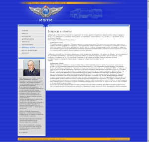

На официальном сайте Кемеровской электротранспортной компании начал работу раздел «Вопросы и ответы»

Эта компания на сегодняшний день одна из совсем немногих в Кемерово, кто относится к своему сайту именно так, как стоит относиться серьезной организации к собственному интернет-СМИ. Добавляются новости с видео, налажена обратная связь, публикуются ответы на вопросы.
Все это разумеется делается не просто так, а в результате большой и кропотливой работы Максима Гончаренко, который трудится в КЭТК специалистом по связям с общественностью.